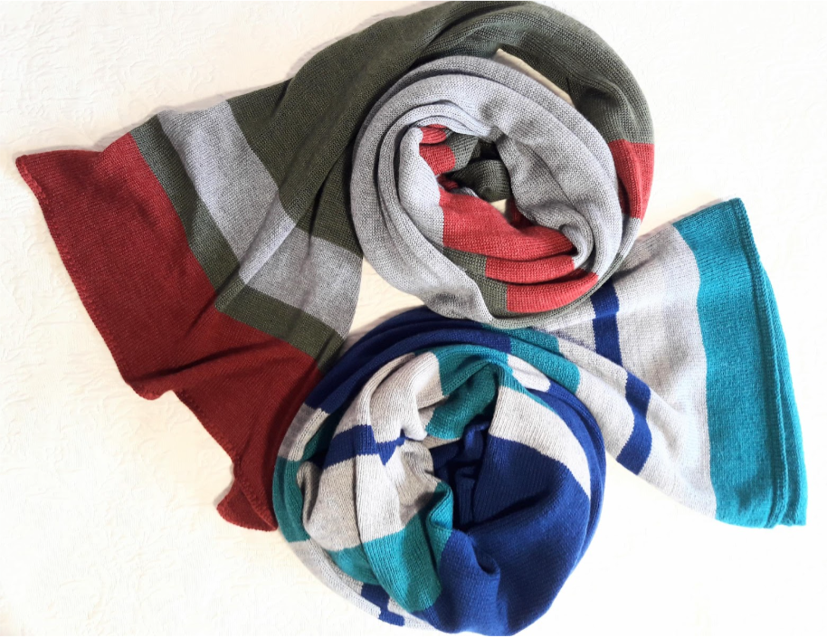
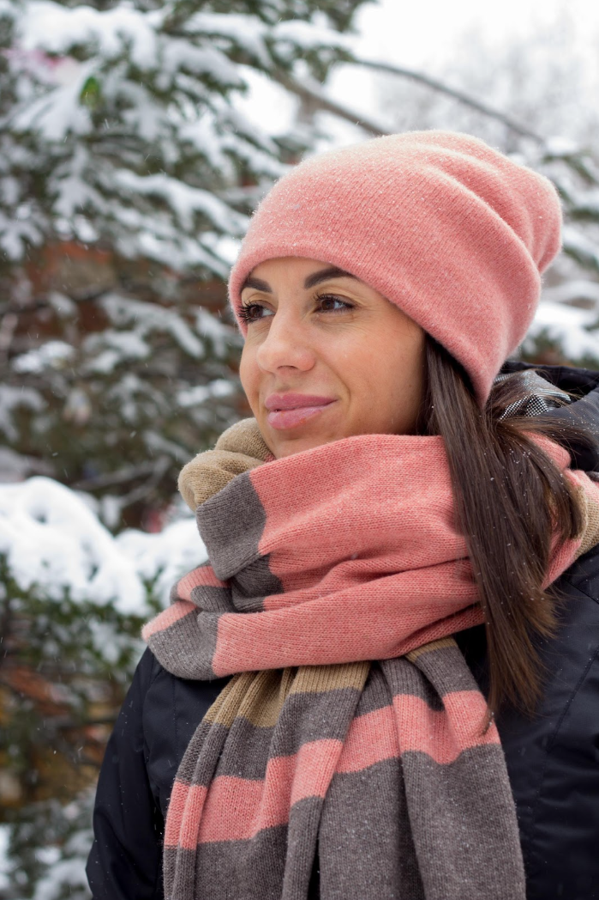
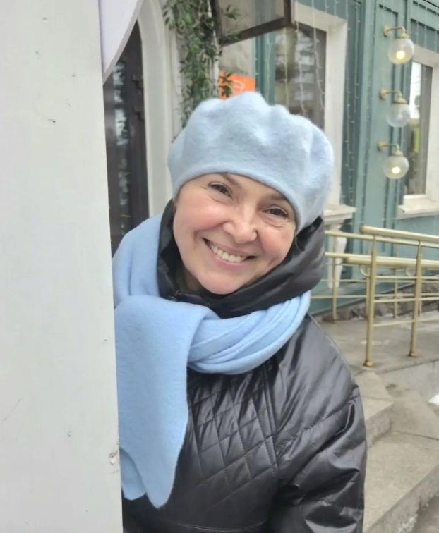
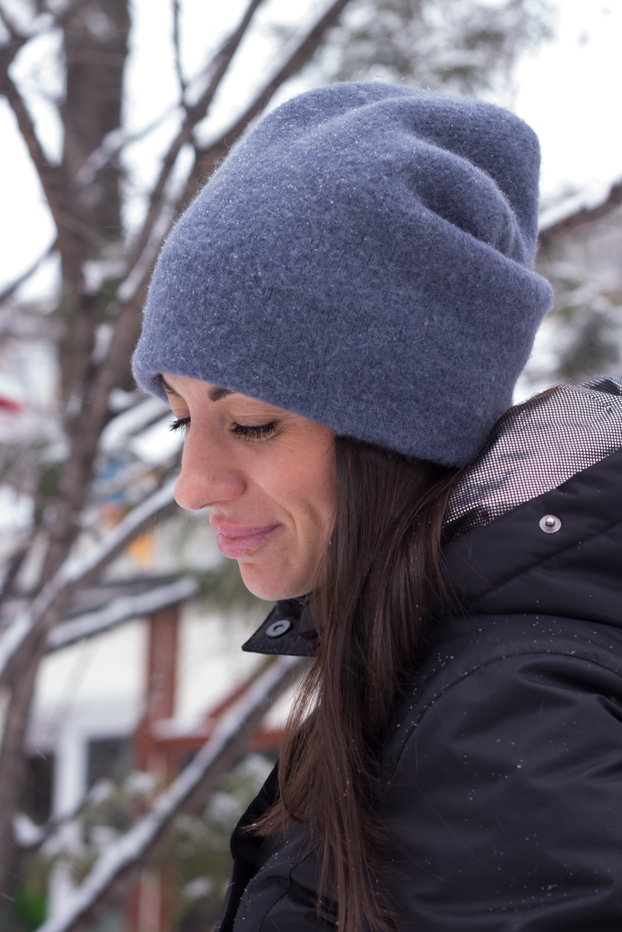
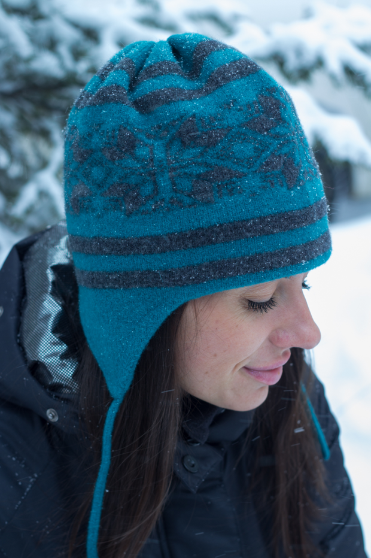
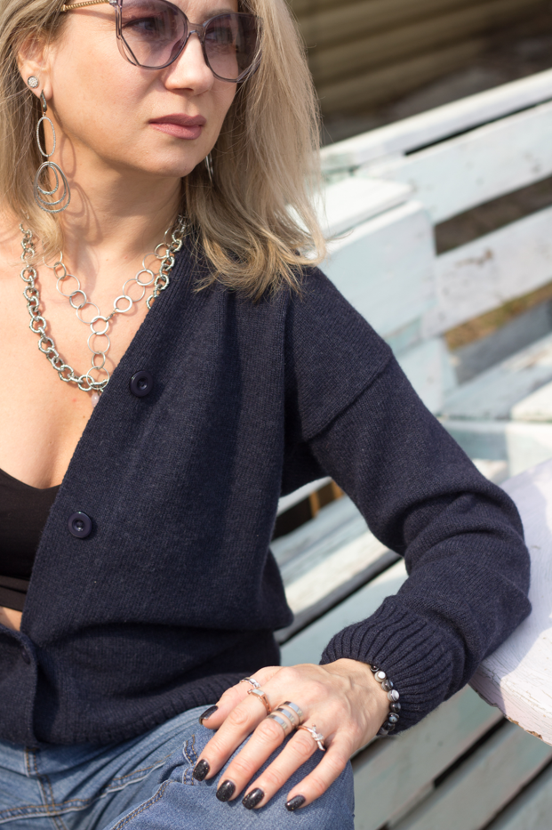
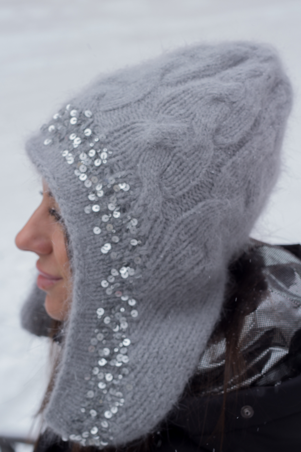
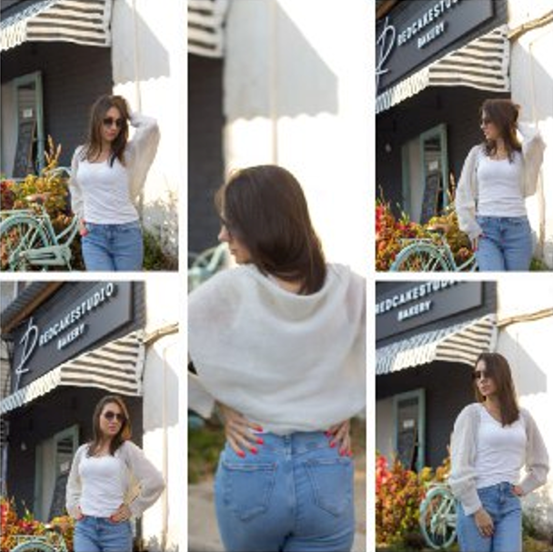
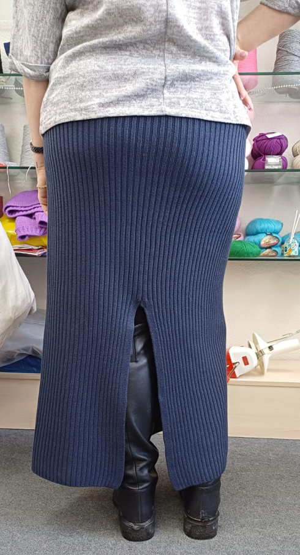
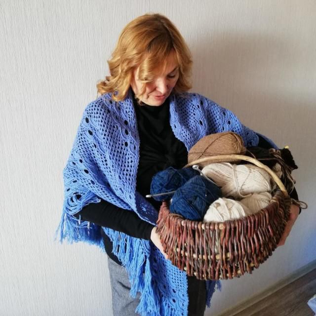

Палантины из гребенного мериноса
Палантины из гребенного итальянского 100% мериноса фабрики Zegna Baruffa в разных цветовых сочетаниях.
- Размер: 220 × 60 см
- Связаны на машине
Авторский трикотаж
Eternal Knitting — это вязаные изделия на заказ и готовые работы: палантины, шапки, береты, кардиганы и уютные комплекты из качественной итальянской пряжи.
Коллекция
Ниже добавлены описания и фото изделий.

Палантины из гребенного итальянского 100% мериноса фабрики Zegna Baruffa в разных цветовых сочетаниях.

Кораллово-бежево-капучиновые тона, 100% кардный итальянский меринос Lanecardate Canberra.

Из тончайшего 100% китайского мериноса фабрики AOYU. Лёгкий, выразительный и очень нежный по фактуре.

Из интересной фактурной пряжи итальянского мериноса Baby Filati BI.MI.VA.

Связана жаккардом из итальянского мериноса с кашемиром фабрики Linsemi Matis.

Пряжа итальянской фабрики Filpucci, конструкция — спущенное плечо.

Интересная стилистика, пряжа 80% ангора и королевские пайетки.

Связано спицами из тончайшего итальянского мохера.

Из итальянского 100% гребенного мериноса Wisch.
Подход
01
Выбор пряжи, состава и оттенка под модель, сезон и пожелания заказчика.
02
Учитываются размеры, длина, свобода облегания и общий характер вещи.
03
Чистая сборка, внимание к фактуре, удобству и долговечности изделия.
О мастере

Я занимаюсь вязанием уже более 10 лет и создаю уникальные изделия вручную. Для меня важно не только качество, но и тепло, которое несет каждая вещь.
Я внимательно подбираю материалы и работаю с итальянской пряжей, создавая изделия, которые остаются актуальными на долгие годы.
Вдохновение я нахожу в природе, текстурах и классических узорах.